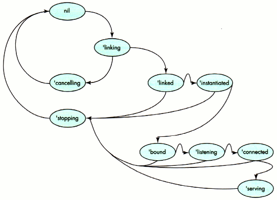

With Newton Internet Enabler (NIE), a whole host of TCP/IP-based
applications become possible on the Newton. Internet clients for
e-mail, Web browsers, and other common services are springing up,
and developers are using NIE to provide portable access to legacy
systems and databases. But how do you get started? This article
will explore the details of using NIE by presenting a sample
Internet application -- a working Web server.
The long-awaited Newton Internet Enabler (NIE for short) opens up the Internet to
Newton users -- the personal communications platform can now speak TCP/IP to the
rest of the world. With so many possible applications that could use it, programming
under NIE is not only useful, it's sure to be a lot of fun!
I've chosen to introduce NIE by looking at a sample application called nHTTPd -- a
Newton-based Web server that implements the HTTP protocol. Throughout the article,
I'll assume you're familiar with the basics of Newton software development and
TCP/IP; see the Newton Programmer's Guide and the NIE documentation for reference.
Before delving into the sample application, let's take a moment to see what's included
in NIE. NIE provides support for three distinct entities. There's a Link Controller for
sharing an underlying link (that is, the low-level PPP or SLIP connection) between
multiple applications and performing expect-response scripting. It also provides a
Domain Name Service (DNS) to map back and forth between host names and IP
addresses. Finally, of course, there's an implementation of TCP and UDP through
NewtonScript's endpoints. For details of how the different parts of NIE work, see "NIE
in a Nutshell."
______________________________
NIE's Link Controller is responsible for establishing the link and passing a
prepared link to the SLIP or PPP manager for the TCP/IP stack to use. In NIE
1.0, authentication is necessary before the stream is switched to PPP --
there is no support for PAP or CHAP. The only Internet links supported in NIE
1.0 are PPP or SLIP over serial or modem links. (NIE 1.1 adds support for
PAP, CHAP, and interactive authentication.) There's a setup utility for users
to enter information about their Internet service provider, such as the access
number, link-level protocol, and a connection script.
The NIE 1.0 DNS is admittedly austere. You can map host names to IP addresses
and the reverse, or you can look up a mail server for a particular host, but
less common kinds of queries are not supported. Name resolution is
nonrecursive -- NIE won't resubmit queries based on earlier responses.
Mappings are cached for a period of time to minimize repeated network
queries. If your application requires more general domain name functionality,
you'll find yourself writing your own, but for most applications this shouldn't
be necessary.
Access to TCP or UDP sockets is available through the standard endpoint API,
with new options to support the different things you may want to do with such
an endpoint.
______________________________
Our sample application (which accompanies this article on this issue's CD anddevelop's
Web site) is a bare-bones HTTP version 0.9 server. To help you understand the code,
here are the basics of the HTTP 0.9 protocol:
GET /
GET /myapp/search.html?field1=hello&field2=world
For the latest version of the sample application, check out the latest
CD and develop's Web site, as this code is perpetually evolving.*
HANDLING REQUESTS
Since the Newton doesn't have conventional directories or files, we need to make some
compromises to translate directory- and file-oriented specifications into something
more meaningful on a Newton. My implementation uses a registry to correlate Newton
data (such as application soup entries) with translators capable of creating Web
objects from Newton data. These translators convert frames or soup entries to HTML
or pure text, and nHTTPd has an API with three methods to allow other programs to
register as translators:
The callback specification frame provides a mechanism for nHTTPd to invoke a
translator and has the same format as a regular communications callback specification.
The only required slot is a CompletionScript slot (since all calls are asynchronous),
containing a function that is passed, in order, these three arguments:
The inData frame has at least four slots:
A formslot, if present, contains slots named for fields in the request; each slot
contains a string bearing the value of the named field. Listing 1 shows what our second
GET example above would expand to.
______________________________
Listing 1. A processed URL frame
{
raw: "/myApp/search.html?field1=hello&field2=world",
data: "search.html?field1=hello&field2=world",
path: "myApp",
tag: "search.html",
form: {
field1: "hello",
field2: "world"
}
}
______________________________
We'll probably also want to include a _parent slot in the callback specification, so
that it can inherit from a useful context within the translator (see Listing 2).
______________________________
Listing 2. The translator callback specification frame
{
_parent: self,
CompletionScript := func(inEp, inData, inErr)
begin
inEp:Output("Why did you want " & inData.tag & "?", nil, {
async: true,
completionScript: func(inEp, inOpt, inErr)
begin
// Do something useful!
...
end,
}
);
inEp:Close();
end,
}
______________________________
OUR STATE MACHINE
Like most communications programs, our application can be represented as a state
machine. The application can be in one of a finite number of states: while in one state,
the application waits for an event, and the functionality of the program is encapsulated
in the actions performed during a state change. The nHTTPd state machine is shown in
Figure 1. The arrows between states indicate transitions -- where the program
actually does something. For clarity, my implementation of this state machine uses
symbols to denote each state, but using integer constants would save memory.

Figure 1. The nHTTPd server's state machine
Using a state machine provides many advantages during application development.
Primarily, it's an organizational tool, allowing us to accurately plan and visualize
what's going on inside our application. There's something very soothing (even if you're
as bad a mechanic as I am) in imagining an application running as a set of gears
clanking around, and it's a lot easier to follow than a spaghetti of method calls. There's
also the benefit that most existing protocols are specified and implemented as state
machines, which makes porting somebody else's code a little easier. While the Newton
is generally a difficult target for porting, porting from a state machine is significantly
easier than porting from most other kinds of implementation.
Our state machine is a little odd, because there are really two separate machines
running at once. We use a protoTCPServer (discussed in detail later) to manage the
Internet link and provide endpoints listening on port 80 (the standard HTTP server
port number). This state machine invokes an instance of protoHTTPServer, which
itself is a smaller state machine that invokes your application.
GETTING A REQUEST
nHTTPd's protoTCPServer deals with all the details of establishing a link, as well as
instantiating and listening on a TCP socket. The protoTCPServer has two methods:
USING THE LINK CONTROLLER
Looking at the Start method gives a good idea of what's involved in using the Link
Controller for the average application. The Link Controller APIs are all asynchronous,
so as part of the arguments you must provide a context frame and the symbol of the
completion script to be invoked (we'll see the details in a bit). Generally, you'll
perform the following steps:
The InetOpenConnectionSlip method presents the user with a slip for selecting an
Internet service provider if no link is currently active. You pass three arguments to
InetOpenConnectionSlip: the initial ID of the link to be offered (or nil to have the
system select one for you), the frame to receive the callback message, and the name of
the slot in the frame that contains the callback method to be invoked.
Once a selection is made, the callback is invoked with a single argument, either nil
(indicating that no connection is to be made) or 'connect. If a link is active, the slip is
not displayed, the existing link is used, and the callback is immediately invoked with
the 'connect symbol. Listing 3 shows how we present the slip along with a callback
method to handle the user's choice (there are several callbacks -- one in the listing
for the user response, one passed to Start to be called in response to an incoming
connection, and one to be called during link acquisition, as shown later in Listing 4).
______________________________
Listing 3. Choosing a connection and handling the user's choice
Start := func(inCallbackSpec)
begin
if fState then return;
fState := 'choosing;
InetOpenConnectionSlip(nil, self, 'mConnectSlipCb);
fCallbackSpecs := Clone(kProtoCallbacks);
fCallbackSpecs.fStart := inCallbackSpec;
end;
mConnectSlipCb := func(inAction)
begin
if inAction = 'connect then
begin
fState := 'linking;
fStatusView := BuildContext({_proto:
GetLayout("protoInetStatusTemplate")});
fStatusView:Open();
InetGrabLink(nil, self, 'mGrabCb);
end
else fState := nil;
end;
______________________________
Once the user has selected the preferred link mechanism, a status slip is created and
presented to the user. The nHTTPd status slip is based on the Newton DTS sample
Internet status slip, showing only a text view indicating the current status, along with
a Stop button and a close box. Your status slip can contain anything you find
appropriate, as long as it inherits from the protoInetStatusTemplate. Optionally, NIE
can create a default status view for your application.
With the status view built and displayed, call InetGrabLink to request the link that was
indicated by the user. InetGrabLink uses the same arguments as
InetOpenConnectionSlip, although the callback itself takes three arguments: the link ID
being used, the current status of the link as an NIE status frame (the only slot you need
to worry about is the linkStatus slot), and a result code (which is nil for a
successfully established link).
The process of acquiring a link can take a relatively long period of time, since the
device may have to dial a modem and then execute a chat script to establish a PPP or
SLIP stream before being able to conclude successfully. To keep your application
informed, it invokes a progress callback periodically. In your callback, you can use
the function InetDisplayStatus to keep the user apprised of status (see Listing 4).
______________________________
Listing 4. The InetGrabLink status callback
mGrabCb := func(inLinkID, inStat, inErr)
begin
fLinkID := inLinkID;
if inErr then
begin
:mNotifyError("InetGrabLink", inErr);
fState := nil;
end
else
begin
InetDisplayStatus(inLinkID, fStatusView, inStat);
if inStat.linkStatus = 'connected then
begin
fState := 'linked;
InetDisplayStatus(inLinkID, fStatusView, nil);
fStatusView := nil;
:mInstantiateAndBind();
end;
end;
end
______________________________
InetDisplayStatus is a versatile function; depending on its arguments, it can do many
things. You pass the current link ID, a reference to your status view, and a reference
to the status frame from your callback. In turn, the function will show or hide the
status dialog or update the status indicator with the text of the current status as
necessary. Table 1 shows the relationship between the arguments to InetDisplayStatus
and the resulting behavior.
______________________________
Table 1. InetDisplayStatus arguments and results
| Second Argument | Third Argument | Result |
| (view status) | (status) | |
| nil | nil | Returns a |
| reference to a | ||
| default status | ||
| view, and | ||
| opens the | ||
| view for you | ||
| -- | -- | -- |
| Template of | Status frame | Uses the |
| template as | ||
| the status | ||
| view | ||
| a status view | (non-nil) | and displays |
| the status | ||
| -- | -- | -- |
| A currently shown | nil | Closes and |
| destroys | ||
| status template | the status | |
| view |
______________________________
Note that InetDisplayStatus can even create a status view for you, if you're so inclined.
This status view is built on the protoInetStatusView and provides text indications of
status to the user.
USING ENDPOINTS
Once the link is established, you're free to use endpoints to initiate TCP/IP
connections. Our application uses an array of endpoints to service incoming requests;
one endpoint is always listening for new connections, while other endpoints may be
open responding to existing requests.
Our endpoints begin their life in the method mInstantiateAndBind, shown in Listing 5.
______________________________
Listing 5. Creating and binding an endpoint
mInstantiateAndBind := func()
begin
local myEp;
if NOT fEndpoints then
fEndpoints := [];
myEp := {
_proto: protoBasicEndpoint,
_parent: self,
fState: nil,
ExceptionHandler: func(inExp)
begin
local myErr;
if HasSlot(inExp, 'data) then
myErr := inExp.data;
if myErr <> kCancellationException then
:Notify(kNotifyAlert, kAppName,
"Something bad happened - " & myErr);
:mTearDown(self);
end,
EventHandler: func(inEvent)
begin
if inEvent.eventCode = kCommToolEventDisconnected then
begin
:Notify(kNotifyAlert, kAppName,
"The other side has disconnected." & myErr);
:mTearDown(self);
end
else
print("Unexpected event(" & inEvent.eventCode & ")");
end,
};
AddArraySlot(fEndpoints, myEp);
try
myErr := myEp:Instantiate(myEp, call kGetEndpointConfigOptions
with (fLinkID, kTCP));
onexception |evt| do
begin
:mNotifyError("Instantiate", 0);
return;
end;
if myErr then
begin
:mNotifyError("Instantiate", myErr);
return;
end;
myEp.fState := 'instantiated;
try
myErr := myEp:Bind(
call kINetBindOptions with (0, fPort), {
_parent: self,
async: true,
CompletionScript: mBindCb,
}
);
onexception |evt| do
begin
:mNotifyError("Bind", 0);
:mTearDown(myEp);
return;
end;
if myErr then
begin
:mNotifyError("Bind", myErr);
:mTearDown(nyEp);
return;
end;
end
______________________________
Note that setting up your endpoint works just as you'd expect. In addition, there's a
host of compile-time utility functions that aren't officially supported but they're
useful enough that I've included them with the program and summarized some of them
in Table 2.
______________________________
Table 2. NIE constant functions defined by include files
| Function | Arguments | Purpose |
| kNumToHostAddr | inAddrArr | Turns an IP |
| address into a | ||
| string in the | ||
| form "a.b.c.d" | ||
| kHostAddrToNum | inAddrStr | Turns a string |
| address in the | ||
| form "a.b.c.d" | ||
| into the | ||
| 4-byteIP | ||
| address | ||
| kGetEndpointConfigOptions | inLinkID, inProtocol | Creates |
| an options | ||
| array for use | ||
| when an NIE | ||
| endpoint is | ||
| instantiated | ||
| kINetBindOptions | inLocalPort, inUseDefaultPort | Creates |
| an options | ||
| array for use | ||
| when an NIE | ||
| endpoint is | ||
| bound | ||
| kTCPConnectOptions | inRemoteAddrArr, inRemotePort | Creates |
| an options | ||
| array for use | ||
| when an NIE | ||
| TCP endpoint | ||
| is connected | ||
| kUDPPutBytesOptions | inAddrArr, inPort | Creates |
| an options | ||
| array for use | ||
| with a UDP | ||
| endpoint when | ||
| data is to be | ||
| sent |
______________________________
The function kGetEndpointConfigOptions generates the options array necessary to use
the NIE endpoint. There are options to request NIE (the inet option), specify the link
kind (the ilid option), and indicate the desired transport (a flag indicating TCP or
UDP is passed with the itsv option).
When binding your endpoint, you'll have a little more to consider. At the time your
endpoint is bound, you'll pass different options depending on whether your endpoint is
going to be listening (inbound) or connecting (outbound), and whether the endpoint is
UDP or TCP. If you're using a UDP endpoint, or if your TCP endpoint is inbound, you'll
need to specify a local port number. If your endpoint is an outbound TCP connection,
NIE provides a randomly assigned port number for your endpoint. In the event that you
need to set an option, you can use the function kINetBindOptions.
When would you want to specify a port? Most standard Internet applications have the
notion of a reserved, or well-known, port. The server listens on the well-known port
and clients specify that port as the destination port. Clients are free to use a random
port for the source.
If you're writing intranet applications with dedicated servers, be sure
that the port numbers you pick do not conflict with well-known ports. An
index of well-known ports is available from Internet RFC (Request for
Comments) number 1700. In general, ports numbered below 1024 are
reserved as well-known ports.*
The function in Listing 6 creates an ilpt option frame containing the desired local
port. We're invoking Bind asynchronously, and when it's complete, notification is
achieved through the invocation of mBindCb.
______________________________
Listing 6. Completing a Bind call
mBindCb := func(inEp, inOpt, inRes)
begin
if inRes then
begin
:mTearDown(inEp);
if inRes <> kCancellationException then
:mNotifyError(inRes);
end
else
begin
inEp.fState := 'bound;
try
inEp:Listen(nil, {
_parent: self,
async: true,
CompletionScript: mListenCb,
}
);
onexception |evt| do
begin
:mNotifyError("Listen", 0);
:mTearDown(inEp);
return;
end;
end;
end;
______________________________
From this point, what you do depends on whether you're expecting an incoming
connection or initiating an outgoing request. Since I'm doing the former, I call my
endpoint's Listen method, which instructs NIE to wait until an incoming request
occurs. If you were calling Connect on a TCP socket to initiate an outgoing connection,
this would be where you specify the destination address and port using the irts option
-- you can programmatically generate the appropriate arguments with a call to
kTCPConnectOptions. In our case, the Newton waits until an incoming request is
detected, and then notifies the application by calling the completion script originally
passed to the Listen function (see Listing 7).
______________________________
Listing 7. Processing an incoming request
mListenCb := func(inEp, inOpt, inRes)
begin
if inRes then
begin
:mTearDown(inEp);
if inRes <> kCancellationException then
:mNotifyError(inRes);
end
else
begin
inEp.fState := 'listening;
inEp:Accept(nil, {
_parent: self,
async: true,
CompletionScript: mAcceptCb,
});
end;
end
______________________________
The way we've written it, nHTTPd is an indiscriminate server -- we accept
connections from anywhere. If you wanted to do access control, or log where incoming
connections were from, you could do it before we return control to the
protoTCPServer's callback in mAcceptCb, shown in Listing 8.
______________________________
Listing 8. Accepting an incoming request
mAcceptCb := func(inEp, inOpt, inRes)
begin
if kDebugOn then print("mAcceptCb");
if inRes then
begin
:mTearDown(inEp);
if inRes <> kCancellationException then
:mNotifyError(inRes);
end
else
begin
inEp.fState := 'connected;
inEp.Close := func()
begin
if kDebugOn then print("Close");
:mTearDown(inEp);
end;
fCallbackSpecs.fStart:?CompletionScript(inEp, nil, nil);
end;
end
______________________________
At this point, control is passed to the client of the protoTCPServer, and the request
phase of the connection has begun.
That's the basics of the application -- creating endpoints, accepting configuration
from the user, waiting for requests, and accepting remote connections. We still need to
read serial data to process URLs, do something useful with them, and write out
response data. But first, let's do some more work with the DNS.
For nHTTPd to be truly useful, it needs to track and log the host names generating
incoming requests. We could simply log the IP addresses of incoming hosts, but these
would mean little to the user. Instead, nHTTPd uses the DNS of NIE to ascertain the host
name of incoming queries.
The DNS, like the Link Controller, uses asynchronous calls to do its work. You'll pass
information to one of the DNS functions and receive a response through a completion
script. The DNS provides several global functions for your use:
The first four functions take three arguments: the key for the data to be retrieved, the
client context, and a symbol denoting the callback. The cancellation function takes only
a client context and a callback symbol. For all but the last function, the callback
receives a results array and result code. The results array contains result frames,
each with one or more of the following slots:
Listing 9 shows a code fragment that determines the host name for a particular IP
address and logs it to a soup.
______________________________
Listing 9. Translating a name to an address and logging it
DNSGetAddressFromName(fDestAddr, self, 'mDNSResultCb);
mDNSResultCb := func(inResultArr, inResultCode)
begin
if inResultCode then
begin
// Rats. It failed.
print("DNS lookup failed because of " && inResultCode);
end
else
begin
local myAddrFrame;
local myHandyAddresses := foreach myAddrFrame in inResultArr
collect myAddrFrame.resultDomainName;
fLogSoup:AddToDefaultStoreXmit( {
hostnames: myHandyAddresses,
request: fRequestString
},
kAppSymbol);
end;
end;
______________________________
Now that we have a connection and have logged the domain it came from, we need to do
the work of reading the URL request. Getting data into an application is done as with
any other endpoint: set up an input specification and wait for your data to come to you.
The input specification used by nHTTPd is simple, as shown in Listing 10.
______________________________
Listing 10. The input specification
local myInputSpec := {
form: 'string,
termination: { endSequence: unicodeCR },
filter: {
byteproxy: [
{ byte: kUnicodeBS, proxy: nil },
{ byte: kUnicodeLF, proxy: nil },
]
},
inputScript: func(inEp, inData, inTerm, inOpt)
begin
local myResult, myClient;
// Optimization - why bother if nobody's registered?
if Length(fRegistry) = 0 then
:mReportBogusAndClose(myEp);
if StrLen(inData) = 0 then return;
// Change stuff like %20 to ' '.
:mFilterPercentEscapes(inData);
// Break out the data frame for the application callback.
myResult := :mCreateArguments(inData);
foreach myClient in fRegistry do
if StrEqual(myClient.path, myResult.path) then
break;
if NOT StrEqual(myClient.path, myResult.path) then
:mReportBogusAndClose(myEp);
else
myClient.callback:CompletionScript(inServer, myResult, nil);
end,
completionScript: func(inEp, inOpt, inRes)
begin
if inRes <> kCancellationException then
begin
print("Input spec saw error " & inRes);
:mTearDown(myEp);
end;
end,
};
myEp:SetInputSpec(myInputSpec);
______________________________
If you've done Newton communications work before, this is nothing new. If you haven't,
it's worth taking a moment to consider the notion of an input specification.
Rather than providing a traditional stream for input, the Newton OS provides the
notion of an input specification, which describes the format of the information your
application expects. You build an input specification (or "input spec" for short) using
things like the class of the incoming data, its length or an array of possible
termination characters, how long to wait for input, or communications flags that
denote the end of input. The Newton uses the input spec to watch for input in the
background while your application is running. Once the conditions of the input spec are
met, its inputScript is invoked; if the input spec is never satisfied, the
CompletionScript may be invoked to notify you that the input spec was never filled.
This will happen if you timeout on a receive, or if the endpoint is closed while you're
expecting input. As your application runs, it can change which input spec is active
with the endpoint method SetInputSpec. This aspect of the Newton communications
model makes writing applications based on state machines incredibly easy, and porting
most code from stream-based environments painfully difficult. For more on
communications state machines, see "Use a State Machine."
______________________________
When planning an application, take pains to be sure you've developed a good
state machine to represent it. Effort during the design phase will be repaid a
thousandfold when your application's communications code is almost entirely
an array of input specifications and their scripts. If you're new to working
with state machines and communications, check out the Newton DTS sample
CommsFSM, which has enough to get you started.
If you're porting code, take heart, and do the same. Virtually all protocols can
be well represented by a state machine, and if you do so you'll find it's easier
to implement. At all costs avoid simulating a UNIX Æ-style stream with an
endpoint -- it's expensive, and you'll almost never need the functionality of a
byte stream.
______________________________
There's an exception to input handling that you should know about, even if you never
use it. When you use a TCP endpoint, expedited data isn't passed to your application
through the normal input spec means. Instead, any expedited data is sent as an event to
your endpoint's event handler. Listing 11 shows such an event handler (the method
mTearDown, called in this event handler and many other places, is shown later).
______________________________
Listing 11. Receiving expedited data in an event handler
EventHandler:func(inEvent)
begin
if inEvent.eventCode = kCommToolEventDisconnected then
begin
GetRoot():Notify(kNotifyAlert, kAppName,
"The other side has disconnected.");
:mTearDown(self);
end
else if inEvent.eventCode=kEventToolSpecific then
if inEvent.data < 0 then
print("Got an error (" & inEvent.data & ")");
else
print("Expedited data! The byte was" & inEvent.data);
else
print("Unexpected event (" & inEvent.eventCode & ")");
end,
______________________________
By now, I hope that you've guessed how to send data: you use the endpoint's Output
method, shown in Listing 12.
______________________________
Listing 12. Sending data
inEp:Output("Why did you want " & inData.tag & "?", nil, {
async: true,
completionScript: func(inEp, inOpt, inErr)
begin
// Do something useful!
...
end,
});
______________________________
NIE provides two options of interest for output. The first is the expedited data option,
which can be used to set the expedited flag on a TCP packet. Expedited data is often used,
for example, to signal the other end of the connection that it should cease transmitting
data immediately. An expedited data byte is denoted with the iexp option, with a frame
like the one shown in Listing 13 (where inByte is the byte to be expedited).
______________________________
Listing 13. An expedited data frame
{
label: "iexp",
type: 'option,
opCode: opSetRequired,
result: nil,
form: 'template,
data: {
argList: [ inByte ],
typeList: ['struct, 'byte ],
},
}
______________________________
The other option is required for UDP communications -- the address and port of the
destination. This is required when output operations are performed, because UDP is
connectionless (and you didn't specify the remote address during the call to your
endpoint's Connect method). More on that in a bit.
Tearing down and cleaning up is exactly the same as with a standard endpoint: cancel
any pending operations, disconnect, unbind, and then dispose of your endpoint. The
protoTCPServer uses the method mTearDown, in conjunction with an endpoint's state
variable fState, to determine the appropriate behavior (see Listing 14).
______________________________
Listing 14. Disconnect and cleanup
mTearDown := func(inEp)
begin
if inEp.fState = nil then
print("We do nothing.");
else if inEp.fState = 'instantiated then
:mUnBindCb(inEp, inOpt, inErr);
else if inEp.fState = 'bound then
:mDisconnectCb(inEp, inOpt, inErr);
else if inEp.fState = 'listening then
begin
inEp:Cancel({
_parent: self,
async: false, // avoid async race condition
completionScript: func(inEp, inOpt, inErr)
:mDisconnectCb(inEp, inOpt, inErr)
});
end
else if inEp.fState = 'connected then
inEp:mDisconnect();
else if kDebugOn then print("Endpoint is already closing!");
end
mDisconnectCb := func(inEp, inOpt, inRes)
begin
try
inEp:Unbind({
_parent: self,
async: true,
completionScript: func(inEp, inOpt, inRes)
begin
:mUnbindCb(inEp, inOpt, inRes);
end;
}
);
onexception |evt| do nil;
end;
/* and the other callbacks look similar...*/
______________________________
There's not much to discuss about the teardown procedure, except a couple of hard
knocks you may get when actually using NIE endpoints (or any other kind):
Unlike other endpoints, once you've disposed of an NIE endpoint, there's still a link
hanging around that you'll need to get rid of. You do this with a call to the Link
Controller's InetReleaseLink function, which will drop the link only if no other
application is currently using it. Our protoTCPServer invokes this method after
disposing of its last endpoint, as shown in Listing 15.
______________________________
Listing 15. Disposing of endpoints and releasing the link
mUnbindCb := func(inEp, inOpt, inErr)
begin
try
inEp:Dispose();
onexception |evt| do nil;
SetRemove(fEndpoints, inEp);
if Length(fEndpoints) = 0 then :mReleaseLink();
end;
mReleaseLink := func()
begin
fState := 'stopping;
InetReleaseLink(fLinkID, self, 'mReleaseCb);
end
mReleaseCB := func(inLinkID, inStat, inErr)
begin
if inErr then
begin
:mNotifyError("InetReleaseLink", inErr);
fState := nil;
fEndpoints := nil;
fCallbackSpecs.fStop:?CompletionScript(self, nil, inErr);
fCallbackSpecs := nil;
end
else
begin
if inStat.linkStatus = 'idle then
begin
InetDisplayStatus(inLinkID, fStatusView, nil);
fState := nil;
fEndpoints := nil;
fCallbackSpecs.fStop:?CompletionScript(nil, nil, nil);
end;
end;
end
______________________________
InetReleaseLink takes the same arguments as InetGrabLink -- the link ID, a reference
to a status view if appropriate, and what to put into the status view (or nil to conceal
it entirely). Although it's obvious, be sure your application has the same number of
InetGrabLink calls and InetReleaseLink calls. It's embarrassing to leave the link open
or clobber it on another application.
In addition to releasing the link when you're done with it, you'll want to release it if
you won't be using it for a long period of time (over 15 minutes or so) to avoid battery
drain from an internal modem or the like.
The Newton endpoint model is connection-oriented; it doesn't directly work with a
connectionless protocol such as UDP. Invocation of a UDP endpoint is essentially
similar to a TCP endpoint, except that you never indicate the destination IP and port at
the time you connect. Instead, you'll indicate them during your call to the endpoint's
Output method, using the iuds option.
When performing input or output with UDP, be sure you always indicate packet
boundaries. You do this by forcing a packet boundary on output, by including the
kPacket and kEOP flags in your output and input specifications (see Listing 16).
______________________________
Listing 16. Using packet boundaries for UDP
local myInputSpec := {
form: 'string,
termination: {useEOP: true},
rcvFlags: kPacket,
rcvOptions: {
label: "iuss",
type: 'option,
opCode: opGetCurrent,
result: nil,
form: 'template,
data: {
arglist: [
[ 0,0,0,0 ], // Host address
0, // Host port
],
typelist: [
['array, 'byte, 4],
'struct,
],
},
inputScript: func(inEp, inData, inTerm, inOpt)
begin
// Do something with the data.
...
end,
completionScript: func(inEp, inOpt, inRes)
begin
if inRes <> kCancellationException then
begin
print("Input spec saw error " & inRes);
:mTearDown(inEp);
end;
end,
};
fEndpoint:SetInputSpec(myInputSpec);
fEndpoint:Output("Hello world!",
call kUDPPutBytesOptions with (fAddr, fPort), {
async: true,
sendFlags: kPacket+kEOP,
completionScript: func(inEp, inOpt, inErr)
begin
// Do something useful!
...
end,
});
______________________________
Table 3 indicates which options you'll set at which times for which kinds of
connections. You can use this as a summary to help you in creating your own
applications.
______________________________
Table 3. NIE options and their uses
| Used | Inbound/ | |||
| Option | Provided by | with | outbound | Purpose |
| inet | kGetEndpointConfigOptions | Both | Both | Specify NIE at |
| instantiate | ||||
| ilid | kGetEndpointConfigOptions | Both | Both | Specify link ID at |
| instantiate | ||||
| itsv | kGetEndpointConfigOptions | Both | Both | Specify either TCP or |
| UDP at instantiate | ||||
| ilpt | kINetBindOptions | TCP | Inbound | Specify local port for inbound |
| TCP during bind | ||||
| ilpt | kINetBindOptions | UDP | Both | Specify local port for UDP |
| during bind | ||||
| irts | kTCPConnectOptions | TCP | Outbound | Specify remote IP and port for |
| TCP during connect | ||||
| iexp | N/A | TCP | Both | Specify to expedite data during |
| output | ||||
| iuss | kUDPPutByteOptions | UDP | Both | Specify remote host and |
| port during UDP output |
______________________________
With the exception of link-level management, using NIE is the same as using any other
kind of Newton endpoint. The NIE's Link Controller and DNS use new global functions to
provide support for a unified link-level interface and domain name service. The design
of NIE strongly encourages asynchronous programming techniques.
Using NIE to port existing applications is easy, as is writing new ones. With a little
work, your application can soon be merging on the infobahn among the desktop
machines already cruising the Net.
RAY RISCHPATER (ray_rischpater@allpen.com) is a Software Craftsman currently
employed at AllPen Software, Inc., developing custom applications for the Newton
platform. His hobbies include writing freeware for PDA devices, amateur radio, and
channeling technical articles for journals such as develop and PDA Developers from
his Siberian Husky, Sake.*
Thanks to our technical reviewers T. Erik Browne, Dan Chernikoff, Gary Hillerson,
Jim Schram, and Bruce Thompson. Thanks also to Todd Courtois and Rachel Rischpater
for their feedback, and of course the staff at develop for putting the journal around the
article.*